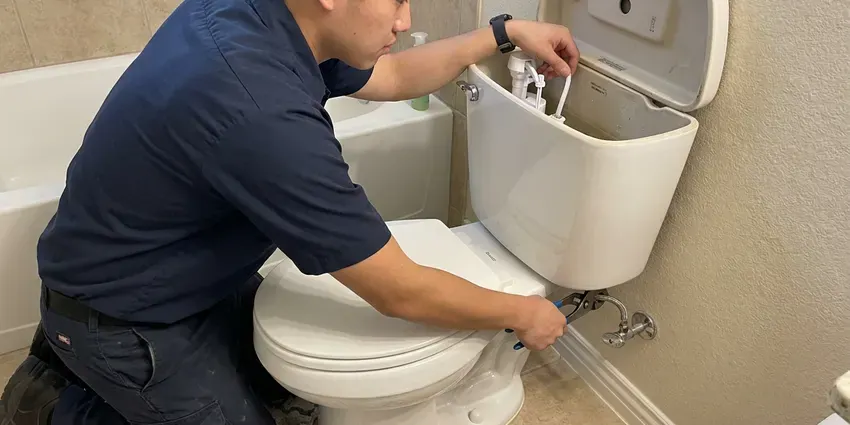
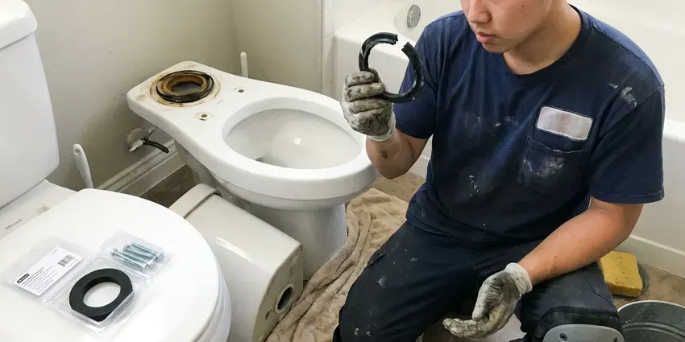
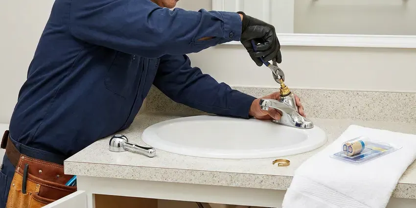
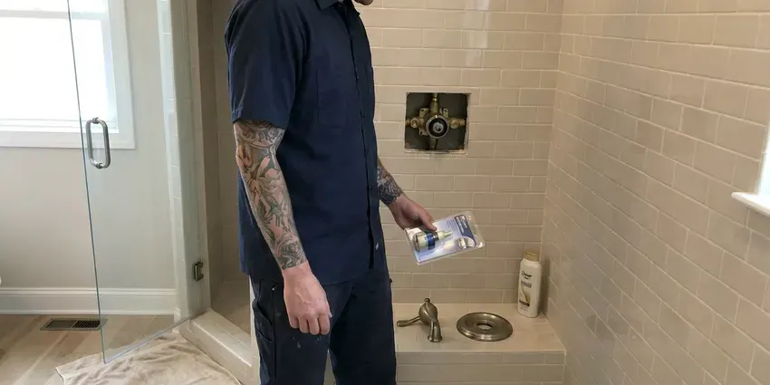
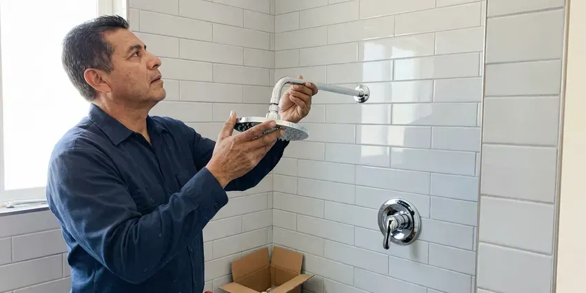
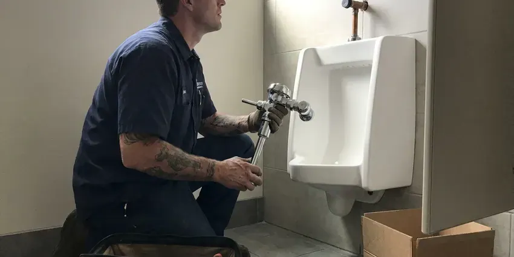

Faucet Installation in Wauwatosa, WI
A new faucet should look great and never leak. HKV Plumbing installs kitchen, bath and bar faucets in Wauwatosa, WI with new supply lines and a complete leak test.
- Upfront Pricing
- Satisfaction Guaranteed
- Fast, Local Service
- All Major Faucet Brands
Ready for a New Faucet Installation in Wauwatosa, WI?
Our team is ready to help you pick and install the right faucet for your space.
Professional Faucet Installation Services in Wauwatosa, WI
At HKV Plumbing, we understand that a new faucet enhances both the look and function of your space. Our skilled plumbers in Wauwatosa, WI are equipped to install a wide range of models, ensuring that the work meets all local plumbing codes.
Our expertise includes:
- Outdoor and Utility Faucet Installation
- Single-hole, widespread and wall-mount faucet installation
- Upgrade kitchen and bathroom fixtures

Additional Bathroom Plumbing Services in Wauwatosa, WI
From toilets to showers, our bathroom plumbing team in Wauwatosa, WI handles repairs, installs, and upgrades with tidy, code-compliant work.


Toilet Repair service for Wauwatosa homeowners

Professional toilet bowl replacement, Wauwatosa

Professional faucet repair, Wauwatosa

Shower Repair service for Wauwatosa homeowners

Shower Installation near Wauwatosa

Customers
Why Choose HKV Plumbing for Faucet Installation in Wauwatosa, WI?
Many faucet leaks start with a rushed install, like cross-threaded connections or reused old supply lines. We use new parts and proper technique so your faucet stays leak-free under the sink.
- Enhanced Aesthetics, A professionally installed faucet improves the look and feel of your kitchen or bathroom.
- Local Expertise, Our team knows the specific plumbing challenges and water conditions in Wauwatosa, WI.
- Proper Fit, We check hole count, spacing and deck thickness before mounting.
Citywide Coverage
HKV Plumbing proudly serves every neighborhood in Wauwatosa, providing prompt and reliable faucet installation services wherever you are. Whether you are in an older neighborhood or a newer development, our plumbers are just a call away.
Experienced Team
Our team of plumbers has broad experience with all types of faucet installations, from basic utility sinks to complex pot fillers. They are trained on the latest models and installation techniques to ensure a perfect fit every time.
Safety-First Approach
Safety and code compliance come first for every faucet installation we perform. We ensure all water lines are properly shut off, connections are secure, and drain lines are clear, preventing any hazards.
Trusted Certified Wauwatosa Plumbing Services Professionals
At HKV Plumbing, we take pride in providing licensed, certified plumbing services throughout Wauwatosa, WI. Backed by recognized industry credentials, our experienced plumbers combine technical skill with genuine customer care. Whether it is repair, installation, or maintenance, we follow strict safety and quality standards to deliver lasting results you can trust.
Call Us Now PHCC Plumbing Contractor Recognition
PHCC Plumbing Contractor Recognition Better Business Bureau (BBB) Accreditation
Better Business Bureau (BBB) Accreditation Angi Certified Pro
Angi Certified Pro ISO 9001 Quality Management Certification
ISO 9001 Quality Management CertificationExpert Faucet Installation Services in Wauwatosa, WI
Outdoor Faucet Installation in Wauwatosa
Outdoor faucets, also known as hose bibs, are essential for garden and exterior cleaning. We install durable outdoor faucets built to withstand local weather. During extreme cold, some communities advise residents to run a small stream of water to keep service lines from freezing. Our installations include proper backflow prevention where required by Wauwatosa code, protecting your drinking water from contamination. We use sturdy materials to ensure longevity and prevent leaks.

Laundry and Utility Faucet Installation in Wauwatosa
Laundry sinks and utility tubs need sturdy faucets that handle hot water and heavy use. We install wall-mount and deck-mount utility faucets with hose threads and integrated vacuum breakers. Supply lines are secured and tested. A good utility faucet makes cleanup tasks a lot easier.
Utility Sink Faucet Installation in Wauwatosa, WI
Utility sinks in laundry rooms or garages require sturdy, functional faucets. We install faucets that can handle heavy use and provide the necessary water flow for these demanding areas. Our plumbers make sure that all connections are solid and that the faucet is securely mounted to prevent any wobbling or leaks, which can be especially damaging in less-frequented utility spaces in Wauwatosa homes.
Emergency Faucet Installation in Wauwatosa, WI
Sometimes a faucet issue, like a burst pipe connection or severe leak, requires immediate attention. HKV Plumbing offers emergency faucet installation services in Wauwatosa, WI to address urgent plumbing problems. Our team can quickly assess the situation, shut off the water if necessary, and replace the damaged faucet to prevent further water damage to your property. We focus on rapid response to protect your home.
Emergency Faucet Replacement in Wauwatosa
A severely leaking or broken faucet can cause significant water waste and potential damage. HKV Plumbing offers emergency faucet replacement services in Wauwatosa to promptly address critical issues. We can often provide same-day service to remove the faulty unit and install a new, working faucet, restoring your plumbing system and preventing further problems. Our priority is to stop leaks and restore service promptly.
Luxury Faucet Brands in Wauwatosa, WI
If you are investing in a high-end faucet from a brand like Delta, Moen, Kohler, or Pfister, professional installation is crucial to protect your investment. Our plumbers are experienced with the intricate components and specific requirements of premium fixtures. We handle these installations with the utmost care and precision, ensuring smooth operation and a clean look for your Wauwatosa, WI home.
Faucet Upgrade and Modernization in Wauwatosa, WI
Beyond simple replacement, we help homeowners upgrade their faucets for improved function and style. This might involve installing a touchless faucet, a filtered water dispenser, or a new finish to match updated décor. We check your existing plumbing to confirm compatibility and provide honest advice on the best options for your Wauwatosa, WI home, ensuring your new faucet meets modern standards.

Leaky Faucet Replacement in Wauwatosa, WI
A leaky faucet can waste significant amounts of water and drive up your utility bills. If your old faucet is constantly dripping, it is often more cost-effective to replace it than keep repairing it. We provide efficient replacement services, removing the old, problematic fixture and installing a brand-new, leak-free faucet. This protects your home from water damage and saves you money in Wauwatosa.
Faucet Installation Near Me in Wauwatosa, WI
Looking for faucet installation near me in Wauwatosa, WI? HKV Plumbing is your local plumbing expert, ready to serve your neighborhood quickly and efficiently. We understand the plumbing needs of Wisconsin homes and provide prompt, professional service.
We pride ourselves on being a trusted local plumbing company, providing prompt and professional faucet installation services across Wauwatosa. Our team is always ready to bring our expertise right to your doorstep, ensuring your new faucet is installed correctly and efficiently.
HKV Plumbing at a Glance
- Fully licensed plumbing team covering Wauwatosa, WI
- Same-day appointments and 24/7 emergency response
- Upfront, flat-rate pricing before work begins
- 4.8-star rated by 448+ Wisconsin customers
Wauwatosa Map
Wauwatosa Information
- Population
- 47,038
- Area codes
- 414/262/920
- Service area
- Wauwatosa and communities within 40 miles
- Nearby
- Milwaukee, West Allis, Waukesha, Racine
Private wells serve a large number of rural homes, and some Wisconsin well water carries iron, nitrates or bacteria that require regular testing. That is why proper faucet installation matters for homes in Wauwatosa, WI, where secure, high-quality connections are essential to preventing leaks.
Expert Services
Trust our professionals for reliable HKV Plumbing solutions in Wauwatosa, WI.
Our Specialized Plumbing Services in Wauwatosa, WI
At HKV Plumbing, we provide a complete range of plumbing services across Wauwatosa, WI. From leak detection to full system installations, our team ensures fast, precise, and affordable service for both residential and commercial properties. Explore our core services below:


How Our Faucet Installation Process Works in Wauwatosa, WI
Here is how we take your new faucet from the box to fully working.
Request a Quote
Call (414) 432-4641 or fill out our online form to tell us about your faucet installation needs. We will discuss your options and provide an upfront estimate.
Schedule Service
We will work with you to find a good time for our plumbers to visit your Wauwatosa home. We offer flexible scheduling to fit your busy life.
Professional Installation
Our skilled technicians arrive equipped to install your new faucet. They ensure proper connections, test for leaks, and verify optimal water flow.
Frequently Asked Questions About Faucet Installation in Wauwatosa
The cost of faucet installation in Wauwatosa, WI usually ranges from $200 to $500, depending on the type of faucet, the complexity of the installation, and any necessary changes to existing plumbing. This estimate generally covers labor and basic supplies, but not the cost of the new faucet itself. We provide transparent, upfront pricing after assessing your specific situation.
It depends on your sink's hole count and spacing. Single-hole faucets often include a deck plate to cover extra holes. We help you pick a faucet that fits.
If your new faucet installed by HKV Plumbing starts leaking, please contact us immediately at (414) 432-4641. We will promptly send a plumber to inspect the issue and make any necessary adjustments or repairs under our service warranty, ensuring your satisfaction.
Yes, we can install filtered water faucets, including dedicated drinking water faucets and those integrated into your main kitchen faucet. These installations often involve connecting to a separate filtration system under the sink.
Faucets carry manufacturer warranties, often lifetime for many brands. We guarantee our installation workmanship and will return if a leak is caused by our work.
If your current faucet has internal blockages or a faulty aerator, a new faucet can improve water pressure at that one fixture. However, if the low pressure is a whole-house issue, a new faucet alone will not solve the problem.
Common signs include constant dripping or leaking, low water pressure specifically from the faucet, visible corrosion or rust, difficulty turning handles, or an outdated appearance. Constant repairs often mean it is time for a replacement.
Touchless faucets are convenient and more hygienic in busy kitchens. They cost more and need batteries or power, but many homeowners find them worth the upgrade.
What People Are Saying About Our Plumbing Experts?

Robert G.
The trenchless sewer replacement saved our front yard. They walked us through the camera inspection footage first so we knew exactly what we were paying for.
Sewer Line Replacement · Racine, WI
Patricia H.
We had a slab leak that two other companies could not find. HKV Plumbing located it in under an hour, explained our options, and the price matched the quote to the dollar.
Slab Leak Repair · Racine, WI
Mark T.
When our office needed drain cleaning, HKV Plumbing provided quick, reliable service. The plumber arrived on time and made sure every drain flowed perfectly before leaving. Very satisfied.
Drain Cleaning · Waukesha, WIJames P.
Our commercial plumbing system had a leak under the sink, and HKV Plumbing handled it professionally. The plumbers arrived quickly and restored everything without disruption to our customers.
Commercial Plumbing · Kenosha, WI
Daniel K.
A pipe burst at 11 pm and they actually answered. The plumber showed up within the hour, shut everything down, and had us back to normal the next morning. Could not ask for more.
Emergency Plumbing · Wauwatosa, WI
Emily R.
I called HKV Plumbing for plumbing repair, and the technician was fast, polite, and thorough. They explained the problem clearly and fixed it the same day. I will definitely hire them again. Highly recommended!
Plumbing Repair · Milwaukee, WI